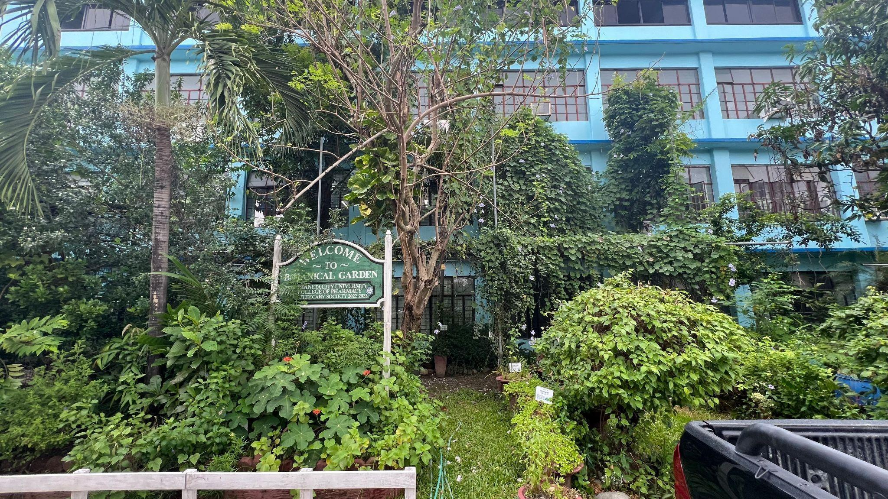
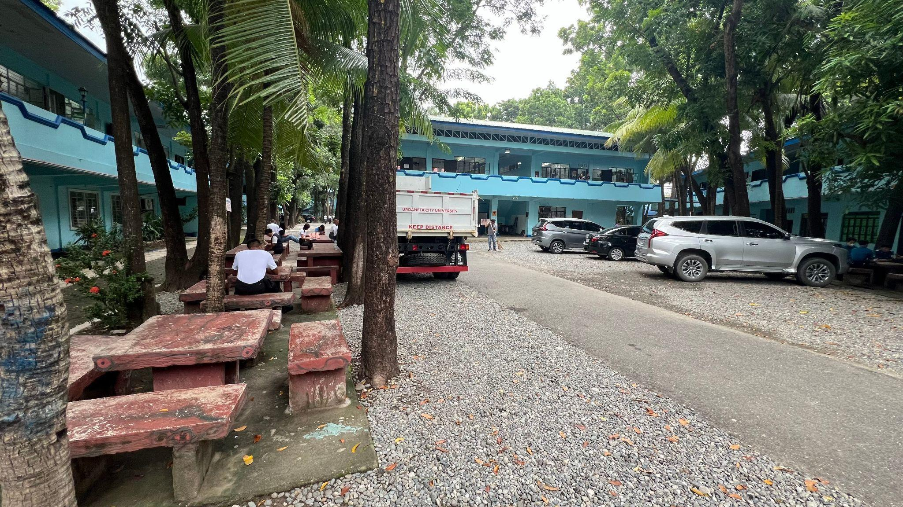
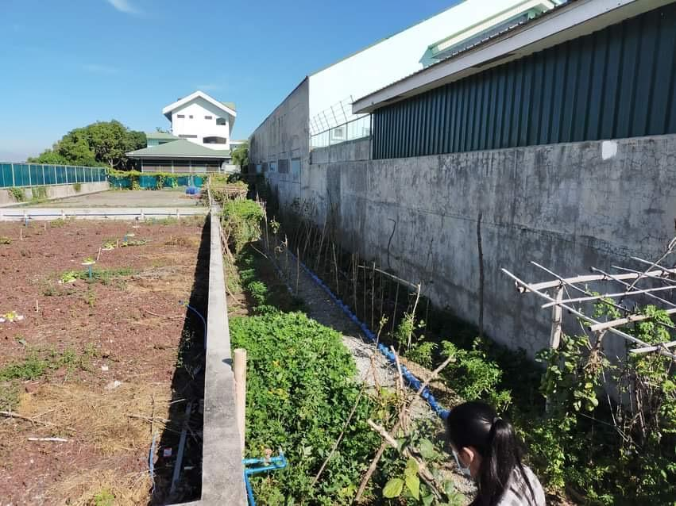
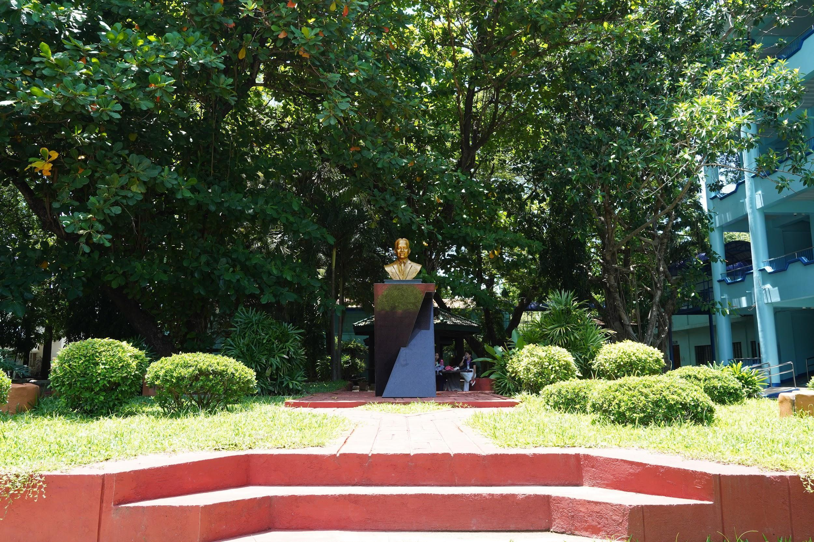
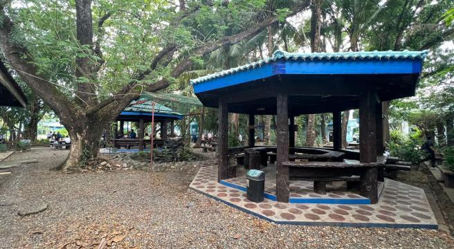

Urdaneta City University (UCU) demonstrates a strong commitment to sustainability and environmental stewardship by dedicating a substantial portion of its campus to planted vegetation. Out of the university’s 35,544 square meters of land area, approximately 4,866 square meters—or about 21% of the campus—are allocated to vegetation and landscaped green spaces. These areas include the Botanical Garden, Chocolate Park, Forest, Fountain, STP/Marawi, Square Garden, and Orata Park, each contributing ecological, educational, and recreational value while enhancing the overall campus environment.

The Botanical Garden is a carefully curated green space that showcases a diverse collection of plant species, including both native and exotic flora. Designed as a living laboratory, it provides students and researchers with opportunities for hands-on learning in botany, ecology, and horticulture. The garden features themed sections such as medicinal plants, tropical species, and succulents, connected by winding pathways that encourage exploration. Informative signage enhances educational value, while workshops and conservation activities promote environmental awareness and sustainable practices within the campus community.

Chocolate Park is known for its distinctive brown benches and structures that blend harmoniously with the surrounding greenery. Shaded by tall mahogany trees, the park offers a peaceful retreat for relaxation, quiet reading, and informal gatherings. Decorative sculptures add character and creativity to the space, while seasonal events and campus activities held in the park encourage community engagement and appreciation for nature.
The Forest area is a natural woodland composed of native trees and shrubs that serve as a habitat for local wildlife. Walking trails allow students and visitors to explore the area while engaging in outdoor recreation and ecological observation. As a biodiversity hub, the forest supports environmental education and conservation initiatives, including guided nature walks, field studies, and ecology-focused programs that encourage a deeper understanding of sustainable living.

Located at the center of landscaped gardens, the Fountain serves as a visual and social focal point of the campus. The gentle sound of flowing water creates a calming atmosphere that encourages relaxation, reflection, and conversation. Surrounded by greenery and seating areas, it provides a welcoming venue for informal meetings, student interactions, and small campus gatherings.

The STP/Marawi area highlights UCU’s dedication to environmental responsibility through the presence of its Sewage Treatment Plant (STP) and demonstration spaces focused on water management and sustainable practices. The area features gardens and installations that illustrate concepts such as water conservation, recycling, and eco-friendly agriculture. Workshops and educational programs conducted here help students and visitors understand the importance of responsible resource management.

The Square Garden serves as a vibrant gathering space with colorful flower beds, shaded seating areas, and open lawns. Its central location makes it an accessible venue for relaxation, outdoor study, and informal discussions. The garden also hosts student activities, cultural events, and campus fairs, strengthening the sense of community and making it an active hub of campus life.


Orata Park, named in honor of Pedro T. Orata, promotes recreation and wellness within the university. The park features jogging paths, open fields, picnic areas, and seating spaces that encourage physical activity and leisure. Regular outdoor programs, sports activities, and wellness events held in the park help foster a healthy lifestyle and strengthen connections among members of the university community.
Through the preservation and development of these vegetated spaces, Urdaneta City University demonstrates how natural landscapes can harmoniously complement campus infrastructure. These green areas not only enrich the educational experience but also cultivate a sustainable, healthy, and vibrant academic environment that benefits students, faculty, and the wider community.